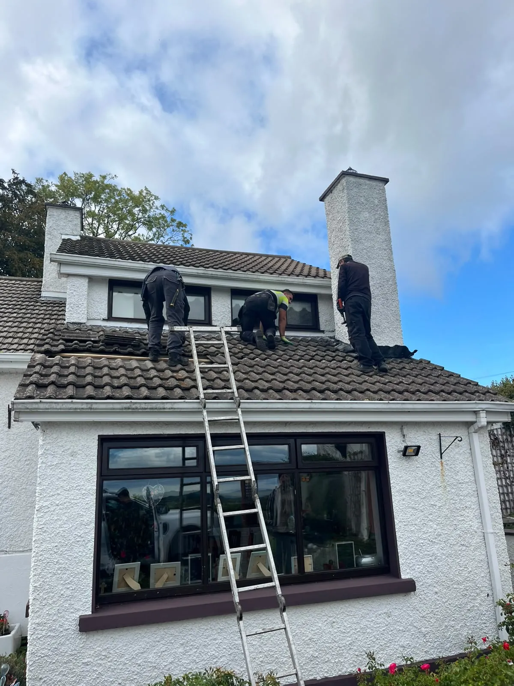
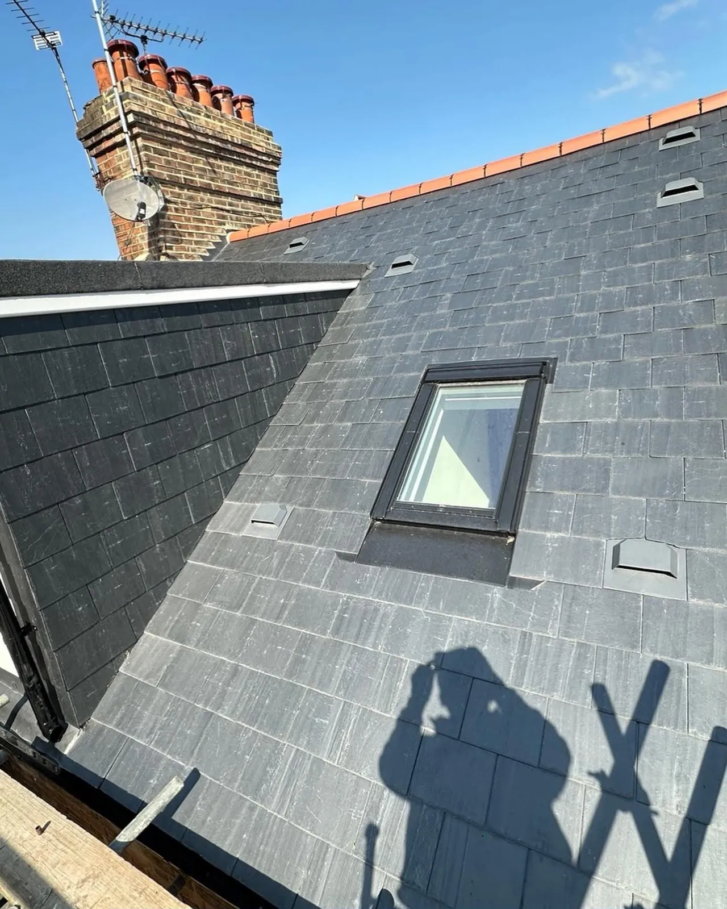

Every kind of roof. Every kind of leak.
Leak repairs, emergency call-outs, flat roofs, slate and tile, chimneys, Velux and full re-roofs, by our own crew across Dublin.
Roof leak detection & repair
The damp patch is rarely under the hole. We trace the leak back to where the water actually gets in and fix that, not just the stain.
DetailsEmergency & storm damage repairs
Water coming in right now? We take emergency call-outs 24 hours a day, 365 days a year, across Dublin.
DetailsFlat roofs: felt, GRP, EPDM & liquid
Extensions, garages, dormers and porches. Torch-on felt, GRP fibreglass, EPDM rubber and liquid-applied systems, laid to last.
DetailsSlate & tile roofing
From replacing a handful of slipped slates to stripping and re-roofing the whole house with breathable membrane and new battens.
DetailsNew roofs & roof replacement
Carpentry to finish for extensions, garden rooms and garages, and full re-roofs where repairs no longer make sense.
DetailsChimneys, flashing & lead work
Chimneys are the number one place Dublin roofs leak. We repoint, rebuild, re-flash and cap them so the water stays out.
DetailsVelux, skylights & roof windows
Roof windows fitted and flashed properly, and leaks around existing skylights traced and fixed.
DetailsGutters, fascia & soffit
The roofline that keeps water moving away from your walls. Repairs, replacements and realignment.
DetailsInspections, maintenance & moss removal
Know what state your roof is in before you decide anything. Inspections, preventative maintenance visits and gentle moss removal.
Details
Roof leak detection & repair
The damp patch is rarely under the hole. We trace the leak back to where the water actually gets in and fix that, not just the stain.
- Attic inspection to follow the water’s path
- Slipped, cracked or missing slates and tiles
- Failed flashings, valleys, ridges and verges
- Leaks around chimneys, vents and roof windows
- We rule out condensation and plumbing, and say so if that’s the cause

Emergency & storm damage repairs
Water coming in right now? We take emergency call-outs 24 hours a day, 365 days a year, across Dublin.
- Active leaks, storm and wind damage
- Missing or displaced slates and tiles
- Temporary weather protection when a full repair has to wait
- Two mobile roofing teams covering Dublin daily

Flat roofs: felt, GRP, EPDM & liquid
Extensions, garages, dormers and porches. Torch-on felt, GRP fibreglass, EPDM rubber and liquid-applied systems, laid to last.
- Torch-on felt with insulation upgrades
- GRP fibreglass for a hard-wearing finish
- EPDM rubber membranes
- Seamless liquid roofing over existing decks
- Proper falls, outlets, upstands and drip edges

Slate & tile roofing
From replacing a handful of slipped slates to stripping and re-roofing the whole house with breathable membrane and new battens.
- Natural and fibre-cement slate
- Concrete and clay tile re-roofs
- Breathable membrane and treated battens
- Dry ridge and dry verge systems
- Period roof restoration on Victorian, Edwardian and Georgian homes

New roofs & roof replacement
Carpentry to finish for extensions, garden rooms and garages, and full re-roofs where repairs no longer make sense.
- Cut roofs and trussed roofs
- Hip, gable and pitched designs
- Insulation and ventilation done right
- Coordinated with your builder or architect

Chimneys, flashing & lead work
Chimneys are the number one place Dublin roofs leak. We repoint, rebuild, re-flash and cap them so the water stays out.
- Repointing, flaunching and chimney rebuilds
- Lead flashings, soakers and back gutters
- Chimney cowls and capping
- Valley lead replacement

Velux, skylights & roof windows
Roof windows fitted and flashed properly, and leaks around existing skylights traced and fixed.
- Velux and roof window installation
- Skylight flashing, seals and surrounds
- Flat roof skylight upstands

Gutters, fascia & soffit
The roofline that keeps water moving away from your walls. Repairs, replacements and realignment.
- Gutter replacement and realignment
- uPVC fascia and soffit
- Gutter cleaning and leak repairs
- Downpipes and outlets
Inspections, maintenance & moss removal
Know what state your roof is in before you decide anything. Inspections, preventative maintenance visits and gentle moss removal.
- Full roof inspections with photo report
- Moss removal and roof cleaning
- Roof ventilation to stop condensation
- Commercial and managed properties too
How we trace a leak
Patching the ceiling stain almost never works, because water travels before it drops.
Start in the attic
Marks on the felt and timbers show the path the water took. We follow it back uphill.
Check the usual suspects
Chimney junctions, flashings, valleys, vents and roof windows.
Fix the detail
Repair or renew the failed slate, flashing or valley properly, not mastic over it.
Rule out the rest
If it’s condensation or plumbing we’ll tell you, instead of charging for a roof repair.
Things people ask us
How quickly can you come out for a leak?
Why isn’t the damp patch directly under the leak?
Could it be condensation rather than a leak?
Do you charge for a quote?
Repair or replace: how do you decide?
Which areas do you cover?
Do you work with the council housing grants?
Are you insured?
Roof leaking? Let’s get it sorted.
Send us a few photos and we’ll give you a price. Free quote, no pressure. Emergency call-outs 24/7.